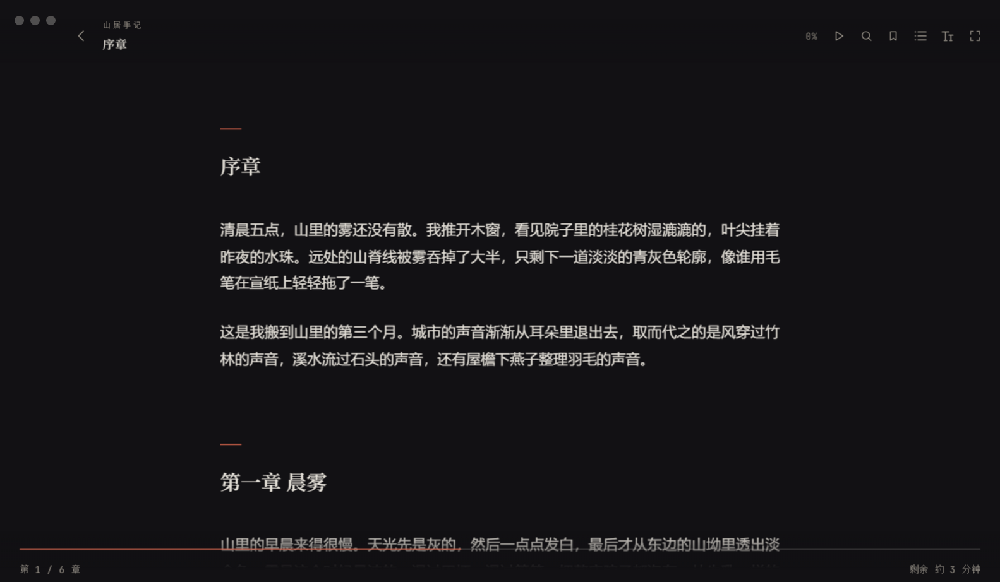
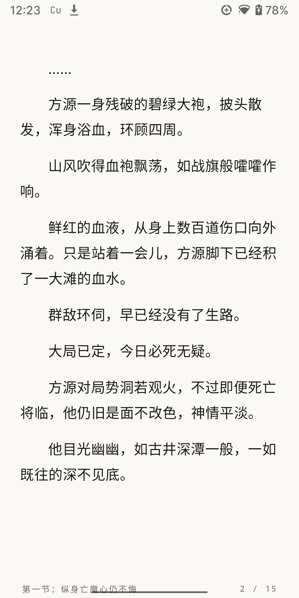
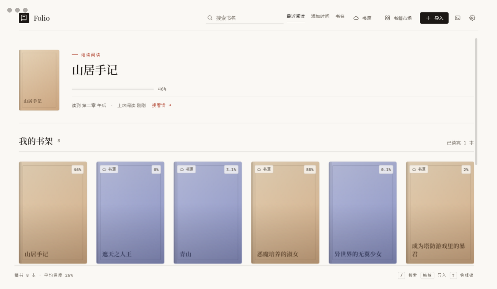

先能用，再好用
每一版都留下一个能跑起来的东西，打磨放在它之后。
Shanghai —
GitHub01 — 正在做 / Selected work
本地优先的双端阅读器
极简沉浸式电子书阅读器。桌面端 Electron + React，安卓端 Kotlin + Compose；同一本书的进度、书签与阅读痕迹，在局域网里自动对齐。



书在磁盘上，索引在本地。断网、关服务器，都不影响接着读。
安卓端不是遥控器，没有桌面端也能导入、阅读、做笔记。
同一个 Wi-Fi 下交换进度，数据不经过任何第三方服务器。
02 — 索引 / Index
下面这份清单直接读取 GitHub。新仓库建好之后，打开页面就会自己长出来。
暂时取不到仓库列表，稍后再试。
03 — 方式 / Practice
不追热点，不堆功能。每一件东西都要能被真正用起来。
每一版都留下一个能跑起来的东西，打磨放在它之后。
数据留在自己的机器上，能走局域网就不绕服务器。
宁可少做一个功能，也不留一个半成品。